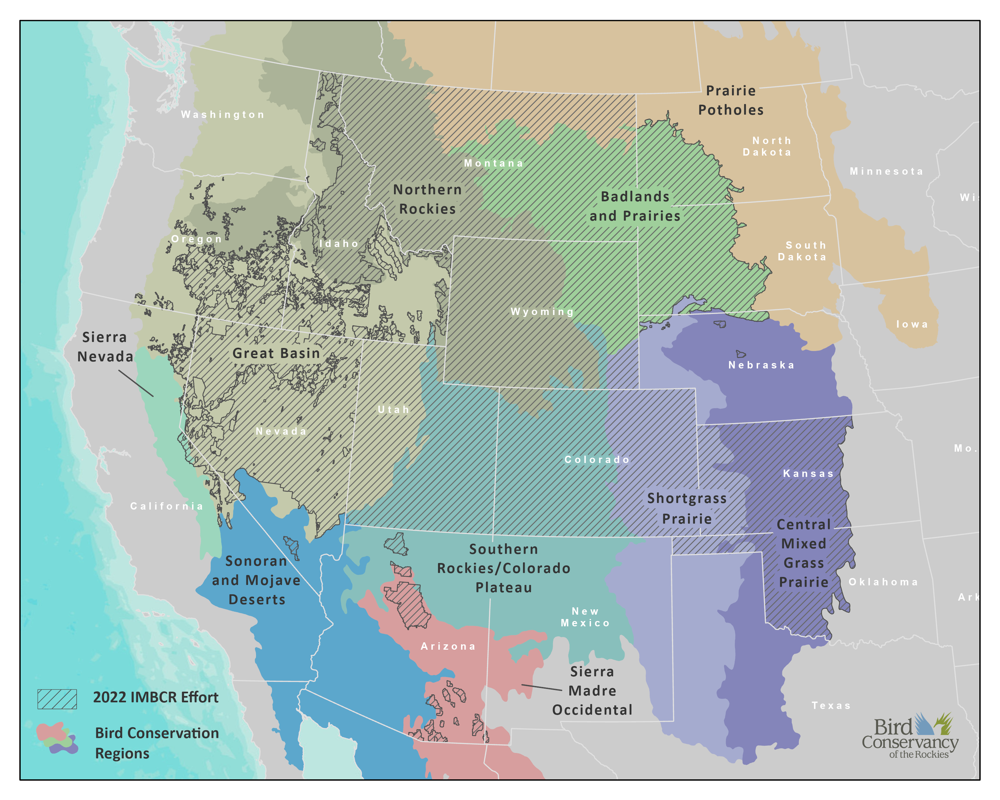
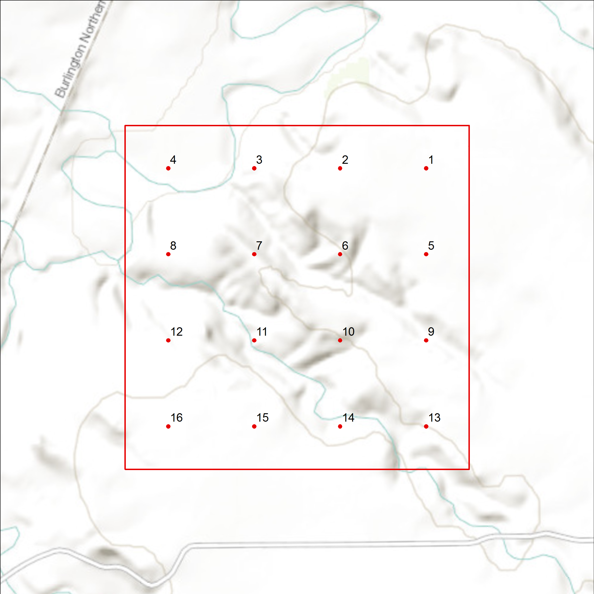

5 Methods
5.1 Study Area
In 2022, the IMBCR program’s area of inference encompassed four entire states (Colorado, Montana, Utah, and Wyoming) and portions of 11 additional states (Arizona, California, Idaho, Kansas, Nebraska, Nevada, New Mexico, North Dakota, Oklahoma, Oregon, and South Dakota). We surveyed across US Forest Service (USFS) Regions 1, 2, and 4 and in portions of Region 3; all of the Badlands and Prairies Bird Conservation Region (BCR 17), and portions of nine other BCRs: Great Basin (9), Northern Rockies (10), Prairie Potholes (11), Sierra Nevada (15), Southern Rockies/Colorado Plateau (16), Shortgrass Prairie (18), Central Mixed Grass Prairie (19), Sonoran and Mojave Deserts (33), and Sierra Madre Occidental (34).

5.2 Sampling Design
Sampling Frame and Stratification
A key component of the IMBCR design is the ability to infer about bird populations across spatial scales, from small management units, such as individual national forests or field offices, to entire states and BCRs. This is accomplished through hierarchical (nested) stratification, which allows data from smaller-order strata to be combined to make inferences about higher-order strata. For example, data from each individual national forest stratum in USFS Region 2 are combined to produce Region-wide population estimates; data from each individual stratum in Montana are combined to produce statewide estimates; and data from each individual stratum in BCR 17 are combined to produce BCR-wide estimates.
We define strata based on areas to which IMBCR partners wanted to make inferences. We defined the largest sampling frame as the intersection of state and BCR boundaries (e.g., Wyoming-BCR 10). We base the strata within the state-BCR sampling frames on fixed attributes, such as land ownership boundaries, elevation zones, major river systems and wilderness/roadless designations.
Sampling Units
We define sampling units as 1 km² cells, each containing 16 evenly spaced sample points, 250 meters apart (Figure 3). We define potential sampling units by superimposing a uniform grid of cells over each state in the study area. We then assign each cell to a stratum using ArcGIS version 10.X and higher (Environmental Systems Research Institute, 2017). For all stratifications developed after 2012, we use the United States National Grid (USNG), a nonproprietary alphanumeric referencing system derived from the Military Grid Reference System that was created by the Federal Geographic Data Committee.

Sample Selection
Within each stratum, we use generalized random-tessellation stratification (GRTS), a spatially balanced sampling algorithm, to select sampling units (Stevens Jr. & Olsen, 2004). The GRTS design has useful properties with respect to long-term monitoring of birds at large spatial scales including:
Spatially balanced sampling is generally more efficient than simple random sampling of natural resources (Stevens Jr. & Olsen, 2004). Incorporating information about spatial autocorrelation in the data can increase precision in density estimates.
All sampling units in the sampling frame are ordered, such that any set of consecutively numbered units is a spatially well-balanced sample (Stevens Jr. & Olsen, 2004). In the case of fluctuating budgets, IMBCR partners can adjust the sampling effort among years within each stratum while still preserving a random, spatially balanced sampling design.
A minimum of two sampling units within each stratum are required to estimate the variances of population parameters. However, reliable stratum-level occupancy estimates require larger sample sizes, with a minimum of approximately 8-10 samples per stratum. Additional samples may be required for strata comprising large geographic areas. Because we estimate regional density and occupancy using an area weighted mean, adding more samples to a particular stratum does not bias the overall estimate, it simply increases the precision. After the initial two sampling units were selected, the remaining allocation of sampling effort among strata was based on the priorities of the funding partners.
5.3 Sampling Methods
IMBCR observers with excellent aural and visual bird-identification skills conducted field work in 2020. Prior to conducting surveys, observers completed an intensive training program that was largely virtual to ensure full understanding of the field protocol and review bird and plant identification. Observers were also shadowed by a crew leader at the start of the field season to ensure they understood the protocol and could identify all birds within a region.
Observers conducted point counts (Buckland et al., 2001) following protocols established by IMBCR partners (Hanni, White, Birek, Van Lanen, & McLaren, 2012). Observers conducted surveys in the morning, beginning one-half hour before sunrise and concluding no later than five hours after sunrise. Observers recorded the start time for every point count conducted. For every bird detected during the six-minute period, observers recorded species, sex, horizontal distance from the observer, minute, type of detection (e.g., call, song, visual), whether the bird was thought to be a migrant, and whether the observer was able to visually identify each record.
Observers measured distances to each bird using laser rangefinders when possible. When it was not possible, observers estimated the distance by measuring to some object near the bird using a laser rangefinder. In addition to recording all bird species detected in the area during point counts, observers recorded birds flying over but not using the immediate surrounding landscape. Observers also recorded Abert’s squirrel (Sciurus aberti), American red squirrel (Tamiasciurus hudsonicus), and American pika (Ochotona princeps). While observers traveled between points within a sampling unit, they recorded the presence of any species not recorded during a point count. The opportunistic detections of these species are used for distribution purposes only.
Observers considered all non-independent detections of birds (i.e., flocks or pairs of conspecific birds together in close proximity) as part of a “cluster” rather than as independent observations. Observers recorded the number of birds detected within each cluster along with a letter code to distinguish between multiple clusters.
At the start and end of each survey, observers recorded time, ambient temperature, cloud cover, precipitation, and wind speed. Observers navigated to each point using hand-held Global Positioning System units. Before beginning each six-minute count, surveyors recorded vegetation data within a 50m radius of the point via ocular estimation. Vegetation data included the dominant habitat type and relative abundance, percent cover and mean height of trees and shrubs by species, grass height, and ground cover. Observers recorded vegetation data quietly to allow birds time to return to their normal habits prior to beginning each count.
For more detailed information about survey methods and vegetation data collection protocols, refer to Bird Conservancy’s Field Protocol for Spatially Balanced Sampling of Landbird Populations on our Avian Data Center. You will also find links to past and current protocols and data sheets.
5.4 Data Analysis
Distance Analysis Assumptions
Distance sampling theory was developed to account for the decreasing probability of detecting an object of interest (e.g., a bird) with increasing distance from the observer to the object (Buckland et al., 2001). The detection probability is used to adjust the count of birds to account for birds that were present but undetected. Application of distance theory requires that five critical assumptions be met: 1) all birds at and near the sampling location (distance = 0) are detected; 2) distances to birds are measured accurately; 3) birds do not move in response to the observer’s presence (Buckland et al., 2001; Thomas et al., 2010); 4) cluster sizes are recorded without error; and 5) the sampling units are representative of the entire survey region (Buckland, Marsden, & Green, 2008).
Density Estimation
We developed a Bayesian, zero-inflated N-mixture model (Royle 2004, Sillett et al. 2011) to estimate density and abundance for all strata and superstrata across all species with sufficient data. We used distance sampling to estimate detection probabilities and adjust counts accordingly. For a detailed description of statistical analyses performed, see (Appendix D).
Bayesian approaches to density estimation provide several benefits over traditional distance sampling analyses, while providing similar and unbiased estimates of density and abundance. First, with the nested design of IMBCR, point count locations within a 1-km2 grid cell are not independent. Therefore, with traditional methods, it is necessary to treat each point as a spatial replicate within the grid cell(i.e., average counts across points). However, it is unlikely that bird densities are uniform within a grid cell, and a better solution would be to estimate density at the point count location. Bayesian models provide the flexibility to do this, while correctly accounting for the lack of independence among points. The second benefit, also provided by this flexibility, is the ability to include covariates to explain changes in density. This allows us to explicitly estimate the response of bird density to variables, such as habitat variables, management actions, or time (i.e., trend). Finally, Bayesian approaches allow for sharing of information across parameters. This can assist in obtaining estimates at sites with little data or provide measures of uncertainty when no birds were detected, such as at low densities and/or small sample sizes.
We fit a series of models to the data from each species that had the same model structure describing density estimation but varied in detection structure (see Observation process section below). We used zero-inflation to account for excess zeros in the data, where abundance at a point count location (N) is conditional on the point’s true occupancy state (z) of a species at the point count location, and the mean abundance within a 1-km2 grid cell was modeled as a function of year to estimate stratum-specific trends.
All points within a grid cell shared a mean abundance to account for the lack of independence of those points, but abundance was allowed to vary spatially within a grid cell (i.e., by point) through Poisson variation. To avoid predicting species occurrence outside of observed ranges, we fixed occupancy probabilities to 0 for all strata in which the species was never observed and used a prior informed by the observed proportion of grid-year combinations in a stratum in which the species was detected.
We derived density at the point count location by dividing the estimated abundance by the area of the point count circle (see Observation process section below) and multiplying by cluster size. We derived stratum-level density estimates by averaging all point-level density estimates within each stratum, and we took the area-weighted average of strata estimates to obtain superstratum estimates.
Observation process
We estimated the probability of detecting an independent cluster of individuals by fitting distance functions to the distance data collected during surveys (Buckland et al. 2001). We fit four detection models including:
1. half-normal constant (HN(.))
2. hazard rate constant (Haz(.))
3. half-normal year (HN(t))
4. hazard rate year (Haz(t))
We removed the furthest 10% of observed detection distances from the data set and binned the remaining detections into 10 evenly spaced distance classes. The furthest remaining detection distance became the radius of the point count circle with which we estimated density.
Detection model selection
To minimize computing time but find the most parsimonious detection function, we fit detection-only models to the distance data, using the four model structures described above. We used the Watanabe-Akaike Information Criterion (WAIC; Watanabe 2010, Hooten and Hobbs 2015) to select the most parsimonious detection structure and then used that structure for detection probabilities in the full model to estimate density and abundance.
Trend Estimates
We estimated trends for individual strata by calculating the least-squares regression mean and standard errors for the intercept and slope of the log densities across the monitoring period. We calculated these parameters for every Bayesian iteration to account for uncertainty around density estimates.
We developed a post-hoc approach to estimate trends for superstrata. Using the rolled-up estimates of density for a superstratum, we fit a general linear model (GLM) to the samples from each Bayesian iteration. Fitting a GLM across iterations allowed us to incorporate uncertainty in superstratum trends due to uncertainty around density estimates, but it did not account for temporal variation. To incorporate this second form of variation, we sampled a random intercept and slope for each iteration using the mean and standard error estimated using the GLM and made inference on the distribution of the resampled values.
Occupancy Analysis
Occupancy estimation is most commonly used to quantify the proportion of sample units (i.e., 1 km² cells) occupied by an organism (MacKenzie et al., 2002). The application of occupancy modeling requires multiple surveys of the sample unit in space or time to estimate a detection probability (MacKenzie et al., 2006). The detection probability adjusts the proportion of sites occupied to account for species that were present but undetected (MacKenzie et al., 2002). We used a removal design (MacKenzie et al., 2006), to estimate a detection probability for each species, in which we binned minutes one and two, minutes three and four and minutes five and six to meet the assumption of a monotonic decline in the detection rates through time. After the target species was detected at a point, we set all subsequent sampling intervals at that point to “missing data” (MacKenzie et al., 2006).
The 16 points in each sampling unit served as spatial replicates for estimating the proportion of points occupied within the sampled sampling units. We used a Bayesian, multi-scale occupancy model (Nichols et al. 2008, Mordecai et al. 2011, Green et al. 2019) to estimate 1) the probability of detecting a species given presence (p), 2) the proportion of points occupied by a species given presence within sampled sampling units (θ, Theta) and 3) the proportion of sampling units occupied by a species (ψ, Psi).
We truncated the data, using only detections <125 m from the sample points, except for Accipitriformes, Anseriformes, Falconiformes, Galliformes, Gruiformes, Pelecaniformes, Podicepidiformes, and Suliformes for which we used the maximum observed distance for each species. Truncating the data allowed us to use bird detections over a consistent plot size and ensured that the points were independent (points were spread 250 m apart), which in turn allowed us to estimate θ (the proportion of points occupied within each sampling unit) (Pavlacky Jr., Blakesley, White, Hanni, & Lukacs, 2012). The interpretation of θ for species for which we used maximum distances changes from occupancy to use because point count buffers overlap, but we chose this approach to provide estimates for a larger number of species.
We expected regional differences in the behavior, habitat use, and local abundance of species would correspond to regional variation in detection and the fraction of occupied points. Therefore, we estimated the proportion of sampling units occupied (ψ) for each stratum by estimating BCR-by-year specific estimates of detection (p) and point-level occupancy (θ). We fixed p and θ to 0 for BCRs in which a particular species was never detected.
We fixed ψ to 0 for all strata in which the species was never detected. As with density, we took an area-weighted mean of stratum-level occupancy estimates (i.e.,ψ) to estimate superstratum-level occupancy probabilities. The true point-level occupancy state was conditional on the grid-cell-level occupancy state (i.e., occupied or unoccupied), such that a point could only be occupied if the grid cell was occupied. Finally, we modeled the observation process conditional on the point being occupied using removal modeling.
Our application of the multi-scale model was analogous to a within-season robust design (Pollock, 1982) where the two-minute intervals at each point were the secondary samples for estimating p and the points were the primary samples for estimating θ (Nichols et al., 2008; Pavlacky Jr. et al., 2012). We considered both p and θ to be nuisance variables that were important for generating unbiased estimates of ψ. θ can be considered an availability parameter or the probability a species was present and available for sampling at the points (Nichols et al., 2008; Pavlacky Jr. et al., 2012).
Automated Analysis
In 2019, we updated our analytical methods to use Bayesian hierarchical models specifically designed for analysis of IMBCR data. We performed all data and output manipulation in R (R Core Team, 2022) and model fitting in JAGS (Plummer 2003, 2017) using the R package jagsUI (Kellner 2018). The R code called the raw data from the IMBCR Structured Query Language (SQL) server database and reformatted the data into a form usable with the JAGS code. We allowed the input of all data collected in a manner consistent with the IMBCR design to increase the number of detections available for estimating global detection rates for population density and site occupancy. The R code provided an automated framework for combining stratum-level estimates of population density and site occupancy at multiple spatial scales, as well as estimating the standard deviations and credible intervals for the combined estimates.
We fit initial models to all species with at least 30 detections for density estimation and 10 detections for occupancy estimation. For density estimation, we fit the full model after determining whether there were enough detections based on results from the detection-only model fits. In some cases for both density and occupancy estimation, it was necessary to use a less parsimonious detection structure or simplified model structure to facilitate model convergence. We currently maintain version control of the automated analysis code in the Bird Conservancy repository on www.github.com.